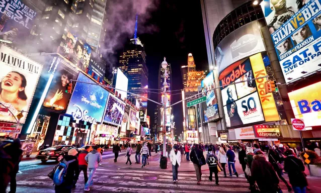
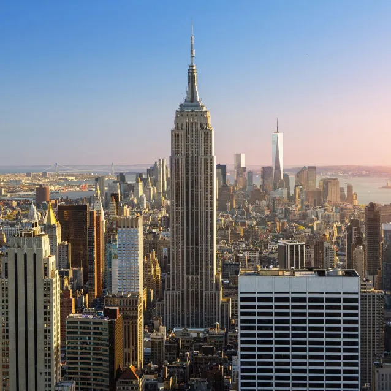

Manhattan le carrefour du monde
Manhattan est l'un des cinq arrondissements de la ville de New-York, les quatres autres arrondissements sont le Bronx, Queens, Brooklyn et Staten Island.
Manhattan est notamment connu pour son célèbre parc qu'est Central Park,

Avec également l'une des places les plus connues et animés au monde Times Square surnommée Crossroads of the world
sur cette place il y a environ 365 000 personnes qui s'y croisent chaque jour.
On y trouve aussi le fameux quartier des théâtres de Broadway ou de noubreuses personnes tentent d'y faire carrière mais très peu y arrive.
Manhattan la ville qui touche les cieux
Manhattan compte dans sa ville des grattes-ciels qui sont mondialement connus comme par exemple l'Empire State Building,
Le Chrysler Building,

Le Comcast Building,

Ou encore le plus récent le One World Trade Center.

Cette tour a été construite suite aux attentas qui ont eu lieu le 11 Septembre 2001 et elle a été surnommée Freedom Tower. C'est le même nom que portait la tour jumelle nord du World Trade Center.

Pourquoi j'ai choisi Manhattan
Si j'ai choisi de vous parler de Manhattan c'est parce qu'elle a une réelle influence dans la pop culture tout d'abord il faut savoir que Gotham City qui est la ville dans laquelle on suit toutes les histoires de Batman est fortement inspirée de Manhattan,

C'est également dans le jeu vidéo GTA IV
mondialement connu dans lequel l'histoire se déroule à Manhattan,

Et un dernier point qui montre que Manhattan a su avoir une influence dans la pop culture, c'est quand la ville apparait à un moment dans le film King Kong
sortie en 2005, lorsque Kong escalade l'Empire State Building et qu'il se fait tirer dessus par des militaires, c'est une scène du film qui reste encore aujourd'hui iconique.

Evolution de la ville

Manhattan en 1936 photo intitulé The connected city

Manhattan en 1950

Manhattan en 1972 à la fin de la construction des tours jumelles